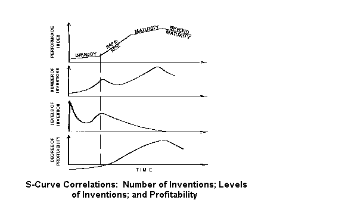
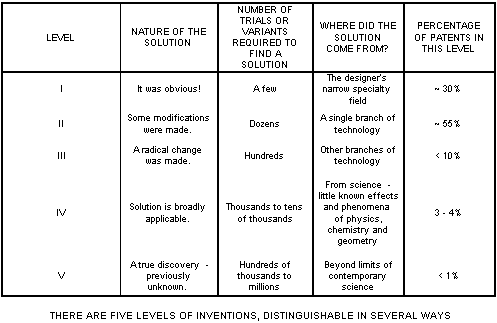
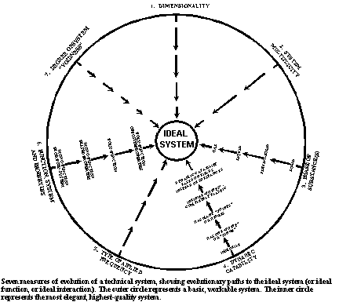
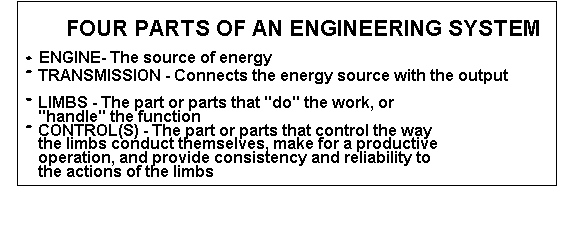
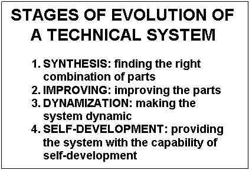
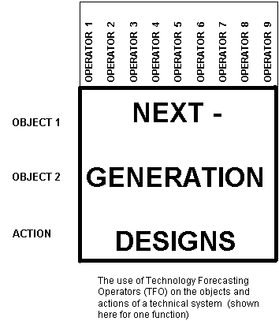

Predicting Next-Generation Products & Processes Using AFTER
- 96 (Algorithm for Forecasting Technology-Evolution
Roadmaps)
James F. Kowalick, PhD, PE Renaissance Leadership Institute Center for TRIZ Development P.O. Box 659, 9907 Camper Lane Oregon House, California 95962
(916) 692-1944 ~ Fax: (916) 692-1946
E-Mail Address: headguru@oro.net
Author Biography The author, through RLI's Center
for TRIZ Development, conducts in-house experiential training for technical teams, on
company products and processes, using TRIZ, ARIZ, QFD, Functional Cost Analysis, and
Taguchi Methods. Participants leave the trainings with actual, new designs. The goal is to
rapidly achieve breakthrough products that take over the marketplace. Dr. Kowalick is a
prolific inventor. He has authored several papers on TRIZ. He teaches the TRIZ
Concept Generation Workshop at the American Supplier Institute in Allen Park,
Michigan. He is co-editor of The TRIZ Journal, an international journal dedicated
to TRIZ and associated processes, available free on the World Wide Web (the TRIZ Journal
web address is: http://www.triz-journal.com). He is an invited lecturer
at Cal Tech's Executive Leadership Program in Pasadena, where he teaches, on a quarterly
basis, the two-day executive overview session: Creating Breakthrough Products: Using
TRIZ and Other Leading Edge Tools to Achieve Market Dominance. He also lectures
on TRIZ, QFD and Taguchi Methods at the Council for Continuous Improvement, and teaches
TRIZ & creativity to Junior and Senior High School students in a private school in
northern California (these students are becoming young inventors after only one year's
training in TRIZ. They have significantly raised their levels of personal creativity and
critical thinking). Engineers from client companies also report significant increases in
their levels of creativity. Books, reports & software on TRIZ & other leading edge
tools are available from Breakthrough Press in Sacramento, CA: Telephone 916-974-7755; Fax
916-482-9898; E-mail: Bywaybooks@aol.com. This tutorial concludes with an extensive TRIZ
bibliography.
The TRIZ Revolution Several years have passed
since TRIZ was first introduced to the United States. By now almost everyone knows that
TRIZ is an acronym for Theory of the Solution of Inventive Problems - the Russian
words are "Teorijz Rezhenija Izobretatel'skich Zadach."
Inventive problems are the toughest ones to solve. They contain technical conflicts. The
first wave of U.S. companies to apply TRIZ to their products and processes has been
successful, in spite of the usual problems associated with introducing revolutionary,
breakthrough approaches into companies. Nevertheless, TRIZ is still in its infancy in
terms of its scope of use. Over a hundred companies have already begun to seriously apply
TRIZ in the U.S., but only a handful have had experience with the use of TRIZ for
forecasting technology.
Technology Forecasting What is the
significance of "using TRIZ to conduct technology forecasting?" The company that
produces a product or product line will be able to rapidly and accurately forecast (1)
next-generation, generic design concepts, (2) the concepts after that, and (3) all the
concepts after that. This same company will not have to wait several years - or even
several decades - for its next-generation, breakthrough products to evolve. The company
will be able to develop next-generation designs - now. Detailed design concepts can be
completed in months or even weeks. Follow-on development time will depend upon the
complexity of the design, but the use of other leading edge tools, including Taguchi
Methods, will allow the company to fully develop and field its new designs in a year or
less.
Such capability - due to TRIZ - gives companies the
capability to assemble valuable, patented intellectual property - an asset
that enables the company to strategically plan its introduction of next-generation
products over the next decade. The bottom-line-result for the company is market takeover.
Why? Because the company's newly introduced products are
"impossible-to-compete-with" products. They are literally "tomorrow's
products, today."
How can a company rapidly and accurately conduct such
technology forecasting? That is the subject of this tutorial.
The Evolution of Technical Systems All
products, all processes, all technical systems evolve over time. "Evolve" means
that the functional efficiencies of key characteristics of the technical system increase
dramatically. Highly evolved systems have high functional efficiencies, and they are also
"market breakers." Functional efficiency is an important measuring scale used to
determine the level of evolution of a technical system. All systems have to be somewhere
on the "functional efficiency" scale. There are three important questions for a
company fielding products for the marketplace: (1) Where is our current
system (product, process) on its functional efficiency scale? (2) What comes next (i.e.,
what is the next-generation product, and what will it look like)? (3) How can this
next-generation product or process be rapidly conceived or invented?
Chaos Versus Order The various tools that are
a part of the TRIZ toolbox are used to predict future concept designs. To the author's
knowledge, no systematic process for conducting technology forecasting has appeared in
English - nor is the author familiar with any well-organized (i.e., suitable for U.S.
corporations) technology forecasting process in Russia. The author began addressing this
problem (lack of an acceptable systematic technology forecasting process) two years ago,
after having applied the TRIZ approach to technology forecasting for client companies. A
systematic technology forecasting process, somewhat similar to ARIZ (the Algorithm for the
Solution of Inventive-Problems) was sorely needed.
Over the past two years, a systematic process for
technology forecasting began to take form and evolve through several early stages of
refinements. The process is really an algorithm of sorts, because certain steps (although
not all) of the process follow a logical sequence. The purpose of the
"algorithm" is to forecast technology evolution. The result is a technology (or
product) roadmap. It seemed appropriate to name this process: Algorithm for Forecasting
Technology-Evolution Roadmaps. The resulting acronym spells out the
word AFTER; its present form is called AFTER - 96 (indicating the year of
latest modifications). On first hearing it, this name sounded appealing because it
represents the question lying behind technology forecasting: "What comes next after
this design?" AFTER - 96 brings order to what was previously chaotic.
For this tutorial, brevity precludes moving through the various parts of this technology
forecasting process) in a rigorous, step-by-step fashion; in lieu of this, some key steps
are discussed and highlighted.
AFTER - 96 has three parts that follow each
other in a logical sequence. Part I is Definition and Analysis. Part II is
called Operations. Part III is Planning and Implementation.
Part I. Definition and Analysis
The first task in technology forecasting is to determine
the basis for forecasting - what to forecast, and then to conduct an analysis of the
current situation.
Determining the Basis for Forecasting
Although forms (designs) regularly change, functions change very little.
"Transporting" is a function that has been a human requirement for millennia.
The forms that satisfy this function have changed frequently. At one point, "two
legs" was the only form for transporting a human being. Then came riding logs along a
stream and the use of certain beasts of burden. The wheel was one of the inventive turning
points contributing to the function of transporting. In more recent times, transportation
evolved from transportation by horses, to transportation by railways, by automobiles, by
airplanes, and more recently, by spacecraft.
Functions serve as the bases for forecasting the various
forms that satisfy functional requirements. Product manufacturers begin by asking,
"What is the main function that our product has to satisfy?" (usually there are
several functions associated with a product). The company team then decides what functions
it wants to apply technology forecasting to, as well as determining the order of
importance of these functions.
Each function chosen is associated with a certain part of
the technical system (product or process). In determining which functions to apply
technology forecasting to, criteria are established to guide this selection of functions.
Examples of criteria-based questions: "What parts of the technical system are
deficient?" "What parts of the technical system are candidates for
improvement?" "What part of the technical system, after it is improved, will
contribute to the product's becoming a "market-breaker?" (i.e., an
"impossible-to-compete-with" product in the marketplace).
Certain engineering phenomena are intimately related to
required functions. An understanding of these phenomena, together with the functions
themselves, leads to identifying the objects in a technical system that interact to
provide the function. Consider the following example.
Braking System for Automobiles. Automobile
braking systems (like all technical systems) have four main generic parts: the "engine"
of the braking system (i.e., the part of the braking system that supplies the energy)
is (local) hydraulic pressure, triggered by foot pressure (the original source of energy)
on the brake pedal. The "transmission" of the braking system
extends from the sole of the driver's foot, to the brake pedal, into the hydraulic system,
and to the brake pad, which acts against a rotating braking surface. The "limbs"
of the braking system are the parts that do the work. These are the brake pads
themselves. The intelligence behind the "controls" (i.e., the
control system) lies with the human being, who determines the braking force profile
through appropriate foot action on the brake pedal.
After analysis, the company brake-system team decides to
conduct technology forecasting on the brake pad/braking surface subsystem.
There are several reasons for this decision, but the main one is that it is the essential
part - the part of the braking system that dictates the design of the other three parts.
The function chosen to be analyzed is "braking."
What is the functional statement that describes braking in
current designs? It is this:
Brake Pad Retards Braking-Surface
(motion).
This functional statement has the form, "Subject
Verb Object" which is the language of functional analysis. In TRIZ, the
subject (i.e., the brake pad) is referred to as "Substance 2 or S2" or "the
tool or instrument." Of the two substances that are interacting (brake pad and
braking surface), the brake pad is the "active" substance - the one that is
doing the work, or, acting as a "first force." The Object (i.e., the rotating
braking surface) in the functional statement above, is referred to as "Substance 1 or
S1" or the "Artifact." Of the two substances (brake pad and braking
surface) that are interacting, the rotating braking surface is the "passive"
substance - the one being acted upon. The purpose or function of this interaction is
retardation-of-motion of S1, the braking surface.
S2 - - - -retards - - - - - S1.
PAD BRAKING SURFACE
The "driving or enabling" field behind the
brake-pad/braking-surface interaction is "mechanical," and it is provided by
hydraulic pressure. The phenomenon connected with the interaction is "dynamic
friction" - retardation due to forced intimate contact between surfaces of bodies
traveling at different speeds, with the force being applied somewhat perpendicular to
their contacting surfaces. This two materials or "substances" involved in this
interaction are (1) a high-density, compressed-fiber, solid body (i.e., brake pad), moving
against a higher-density, solid metal body (i.e., braking surface). The desired result
(retardation of the rotating braking surface) is achieved.
The basis for technology forecasting has been determined.
The function is "retards;" the objects are both solid - one being a smooth metal
surface, and the other being a less dense, compressed, fibrous surface. Technology
Forecasting can proceed, with the "retarding" function serving as the basis for
forecasting. The Operations stage of technology forecasting follows.
Part II. Operations
Technology Forecasting Operators (TFO) There
are certain operators which can be applied to (1) the active element of the function
(i.e., the brake pads); (2) the passive element of the function (i.e., the braking
surface), and (3) the action of the functional statement (i.e., "retardation"),
with the aim of modifying these in a way that increases the functional efficiency of
braking. Although we begin with a small system which is seemingly limited in scale and
scope, these operators will take the forecasters beyond that limited scale and scope. In
S-Field analysis, there is the tendency to "not change the artifact, S1," but to
concentrate (at least initially) on changing the instrument or tool, S2. This is not the
case for technology forecasting. Both the active and passive elements, as well as the
action itself, may be candidates for modification when conducting technology forecasting.
Listed below is a partial grouping of
"operators." These operators are "applied" to the objects and action
under examination. They are considered to be "Technology Forecasting Operators
(TFO's)." There is also a brief description of how each TFO is used. Although there
is a certain prescribed order for applying these operators, the detailed,
logically-sequential, procedure for (1) applying, and (2) analyzing the results from
applying these operators, is not addressed in this tutorial.
1. The Four Relationship Curves Operator
(S-Curve; Number-of-inventions Curve; Level-of-Invention Curve; and Profitability Curve).
Combined with the results from a TRIZ-type search of the patent literature, related to the
function in question (whereby the inventions cited are assigned to levels, as indicated by
the table below), this set of curves can be used to determine where the current
product is on the S-Curve of evolution for each of its functions. Each function will have
a different S-Curve. This knowledge can be used to determine strategic product
introduction approaches to the marketplace. Information on this operator is included in
the practice of TRIZ.


2. The Circular Evolutionary-Patterns Diagram. This operator is a means for assessing the objects and actions that make up the function, to identify opportunities for improvements. Each object or action receives a "mark" indicating where it is on seven different "paths to ideality" scales.

3. The "Four Parts" Operator. The
four parts referred to are the engine, the transmission, the limbs and the controls. If
the function under examination is high enough in the hierarchy of functions (i.e., the
flunctional tree diagram) for the product or process being forecasted, it may be possible
to decompose the function into sub-functions, each having four parts, and to forecast the
technology for each part.
4. The "Four Stages"
Operator. These are Synthesis; Improvement; Dynamics; and Self-Development. This
operator is used to assess what stage the system being forecasted is in (or, to assess
what stages the parts of a system are individually in), and to verbally and by sketches
depict these stages.

5. The Scale and Scope Operator. These
operators are applied to the two objects and to the action (in the functional statement).
The "Scale" operator looks at microsystems and super-systems
(relative to the system being forecasted). In the case of braking, for example, it would
challenge the forecaster to ask: "What is really being braked? Is it the brake disk,
the axle, the wheels, or the car as a whole?" and, "What approaches are
available to brake these?" The "Scope" operator takes the
forecaster beyond the immediate (initially defined) scope of investigation, by asking such
questions as "Why do we have to brake in the first place?"
6. Function, Phenomena, Form Operator. This
operator prompts the forecaster to look beyond the function being forecasted, and to
identify phenomena connected with that function, especially phenomena from other
technologies. The forecaster uses "Effects" of physics, chemistry and geometry
as an aide to accomplish this.
7. The Ideal Final Result Operator. This IFR
operator guides the forecaster towards the ultimate form for satisfying the stated
function. For example, the ultimate braking system should not take up any space, require
no energy, cost nothing, deliver no harmful effects, and yet furnish braking when and
where required.
8. Trends of Evolution/Prediction Tree Operator.
Published prediction trees and trends of evolution have appeared in over 21 books on TRIZ,
and they also appear in the Invention Machine Labs software. These trend-curves and
prediction trees are applied to the objects and actions in the functional statement, in
order to forecast next-generation designs. These trends are also expressed in over six
dozen "standard solution" formats, that are expressed symbolically using
Substance-Field Analysis.
9. Alternative Systems Operator. Applying
this operator to the objects and actions in the function being forecasted, yields
alternative means of accomplishing the function. The source of these alternative ways is
"other systems." For example, how is braking accomplished in: railroad cars;
airplanes; roller skates; etc.?
The systematic application of these operators (and several
others not mentioned above), followed by analysis of the results, yields a detailed
forecast of next-generation designs (systems) for accomplishing the desired function (in
the present case, "braking.").
A special TRIZ-application paper recently presented by this
author at a meeting of automobile manufacturers and automobile parts suppliers is
contained in a report entitled "Functional Analysis Using TRIZ.".
This special paper reports on the use of TRIZ to eliminate a harmful effect connected with
brake pads. Ever since asbestos was removed from brake pads, customers have been
complaining about "brake pad squealing." The author just had new brake pads
installed on his car, and sure enough - they squeal!
A consortium of automobile manufacturers and suppliers
asked the author to analyze this problem and to come up with suggested solutions, using
the TRIZ approach. This special paper reports on 55 generic solutions (there are hundreds
of specific solutions) to the brake squealing problem. Not all the solutions are feasible
for various reasons: manufacturing costs, development costs, business and technical
constraints, etc. The solutions cited need to be taken through an "Alternative Design
Selection Process." The "surviving" solution(s) then need to further
refined and "Taguchi-ized" (i.e., Taguchi Methods, an engineering optimization
technique, is applied to the concept design to maximize functional performance reliablity,
and minimize costs).
The 55 generic solutions mentioned above were generated in
less than one minute! It took another couple of days to consider and interpret specific
meanings from the "one-liner" solutions.
As a follow-up to this analysis, there was a second,
informal session, where the author presented some results from conducting Technology
Forecasting on the braking function. Currently, braking on automobiles is a very
inefficient and costly function, involving "solid against solid" (brake pad
action), and "rubber against road." Both of these phenomena involve (1)
considerable wear on materials, (2) reduced driver controllability, and (3) regular
replacements of parts (brake pads, disks, tires and wheels).
A "next-generation-system" for brake pads,
predicted by the Technology Forecasting arm of TRIZ, would include the use of solid,
moving parts, surrounded by and retarded by fluids (which contribute to the actual
braking). This is a hybrid braking system. The "fluid-retarding-metal" system
operates in addition to ordinary brake pads acting against a rotating braking disk. The
next-generation design after this one is strictly based on the
fluid-acting-to-retard-a-solid system. From there, we can expect to see air braking
(although not air-braking as used on trains). This air braking system would initially be a
hybrid system (i.e., retaining the predecessor braking system). Air braking includes an
air-solid interaction as used on airplanes to brake upon landing. Another
"air-braking" version of pure-gas braking systems would employ the reverse
rocket principle (such a system would accompany very high speed vehicles. Beyond these
systems, additional "field-based" systems include the use of electro-magnetic
systems, with no physical contact between solid objects.
The informal technology forecasting analysis discussed
above, produced some general guideposts for predicting the evolution of automobile braking
systems. A far more detailed, "in-depth" forecasting would apply all the
TFOperators described above - not only to the parts involved in contemporary braking
systems, but to other parts of the vehicle as well. Each "function" under
analysis normally involves two objects and an action. The operators discussed above (as
well as other operators) are applied to these objects and actions, as shown schematically
in the matrix diagram below.

Part III. Planning and Implementation
This part of AFTER - 96 takes the forecasted
results of Part II, and then plans and lays out a timed implementation schedule for the
company's introduction of next-generation technical systems over (typically) a five to
ten-year period. The "Implementation" portion of Part III addresses several
(selected) next-generation designs, and includes an analysis of the key problems that need
to be resolved in order to field these next-generation (forecasted) products. For each of
these individual problems, the next step would be the application of TRIZ and ARIZ.
This tutorial is an "executive overview" on
Technology Forecasting. There are three stages: Definition & Analysis, Operations, and
Planning & Implementation. The authors' company, Renaissance Leadership Institute,
conducts detailed Technology Forecasting analyses for major corporations. The resulting
forecast is then used to develop a strategic product introduction strategy to further
capture significantly more market share. Information on conducting Technology Forecasting
for specific product lines can be obtained from the Renaissance Leadership Institute, Tel:
(916) 692-1944; or Fax: (916) 692-1946.
~ ~ ~ ~ ~ ~ ~
Bibliography
Altov (Altschuller), Genrikh, And Suddenly the
Inventor Appeared, Translated by Lev Shulyak, Distributed by Breakthrough Press
(916) 974-7755; Fax: (916) 482-9898.
Altschuller, Genrikh, Algorithm of an Invention,
Privately translated by the Renaissance Leadership Institute, Center for TRIZ Development,
(916) 692-1944; Fax (916) 692-1946
Altschuller, Genrikh, Creativity as an Exact Science,
Privately re-translated by the Renaissance Leadership Institute, Center for TRIZ
Development, (916) 692-1944; Fax (916) 692-1946
Akiyama, Kaneo, Function Analysis: Systematic
Improvement of Quality and Performance, Distributed by Breakthrough Press (916)
974-7755; Fax: (916) 482-9898.
Blosiu, Julian and Kowalick, James, TRIZ And Business
Survival, Part I. The TRIZ-Journal (free), web page address:
http:\\www.triz-journal.com; E-Mail: headguru@oro.net; (916)692-1944; Fax (916) 692-1946
Brassard, Michael, The Memory Jogger Plus,
Distributed by Breakthrough Press (916) 974-7755; Fax: (916) 482-9898.
Da Vinci, Leonardo, The Notebooks of Leonardo da
Vinci, out of print.
Domb, Ellen and Kowalick, James, Quality Function
Deployment and TRIZ, Proceedings of the OFD Institute, The TRIZ-Journal (free),
web page address: http:\\www.triz-journal.com; E-Mail: headguru@oro.net; (916)692-1944;
Fax (916) 692-1946
Fey, Victor, and Riven, Eugene, TRIZ: A New Approach
to Innovative Engineering and Problem Solving, Target, September/October
1996 Issue.
Invention Machine Labs Software, The
TRIZ-Journal (free), web page address: http:\\www.triz-journal.com; E-Mail:
headguru@oro.net; (916)692-1944; Fax (916) 692-1946
Kowalick, James, Concept Generation Workshop,
American Supplier Institute, Allen Park, Michigan, (800) 462-4500.
Kowalick, James, Creating Breakthrough Products:
Using TRIZ and Other Leading Edge Tools to Achieve Market Dominance, Notes from
the regularly scheduled, two-day Executive Overview seminar at Cal Tech, Industrial
Relations Center, Pasadena, California, (818) 395-4043; Fax (818) 795-7174
Kowalick, James, Going Beyond Concurrent Engineering,
White Paper on Leading Edge Tools Used in Concurrent Engineering, Distributed by
Breakthrough Press (916) 974-7755; Fax (916) 482-9898
Kowalick, James, Organizational Transformation Using
Twelve Leading-Edge Design Practices: How Highly Effective Designers Achieve World Class
Engineering Systems, Special Paper, 12th Annual Taguchi Symposium, ASI,
Rochester, N.Y., Oct 19, 1994, Available through Breakthrough Press (916) 974-7755; Fax
(916) 482-9898
Kowalick, James, Rapidly Achieving Next-Generation,
Low-Cost, Trouble-Free Products and Production Systems, Council for Continuous
Improvement, Central Regional Forum, Oct 22-23, UAW & General Motors, hosts. Available
through Breakthrough Press (916) 974-7755; Fax (916) 482-9898
Kowalick, James, Secrets of Invention, The
TRIZ-Journal (free), web page address: http:\\www.triz-journal.com; E-Mail:
headguru@oro.net; (916)692-1944; Fax (916) 692-1946
Kowalick, James, TRIZ Automotive Application: Brake
Pad Squealing, Special Paper, Council for Continuous Improvement, Central Regional
Forum, Oct 22-23, UAW & General Motors, hosts. Available through Breakthrough Press
(916) 974-7755; Fax (916) 482-9898
Litvin, Simon, Private discussion on the use of TRIZ
with Functional Analysis, Invention Machine Laboratories, St. Petersburg, Russia
Notes from private meeting with Vladimir
Gerasimov, St. Petersburg, Russia